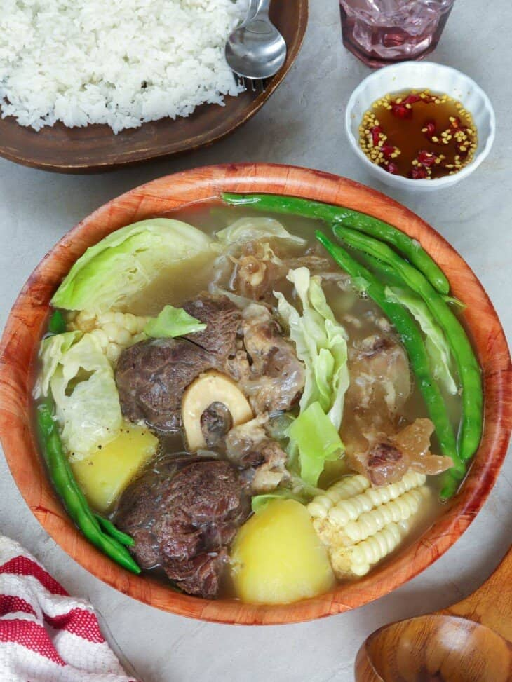

Filipino Recipe for Nilaga

Description
Nilaga, which means"pinakuluan" or boiled, refers to Filipino meat and vegetable soup where chunks of beef, pork,
or chicken are cooked in seasoned broth until fork-tender. Quartered onions, peppercorns, and fish sauce add flavor to the soup while abundant local
produce such as potatoes, corn, cabbage, pechay, green (Baguio) beans, and carrots turn it into a hearty one-pot meal.
Ingredients
- 2 pounds beef shanks, bone-in
- 1 pound beef tendon
- 8 cups water
- 1 large onion, peeled and quartered
- 1 teaspoon peppercorns
- 2 tablespoons fish sauce
- 3 corn, husked and cut into halves
- 2 medium potatoes, peeled and quartered
- 1 small cabbage, cut into wedges
- 12 green beans, end trimmed
- salt to taste
- green onions, optional
Steps
- In a pot, combine beef shanks, beef tendon, and water. Over medium heat, bring to a boil, skimming scum that floats on top.
- When clear of froth, add onions, peppercorns, and fish sauce.
- Lower heat, cover and cook at no more than a simmer for about 2 to 2 ½ hours or until shanks are tender and tendons are soft. Add more water as needed during cooking to maintain about 6 to 7 cups.
- Add corn and cook for about 5 to 7 minutes.
- Add potatoes and cook for about 5 minutes or until almost tender.
- Add green beans and cabbage and cook for another 2 to 4 minutes or until vegetables are tender yet crisp.
- Season with salt to taste. Ladle into serving bowls and garnish with chopped green onions, if desired. Serve hot.